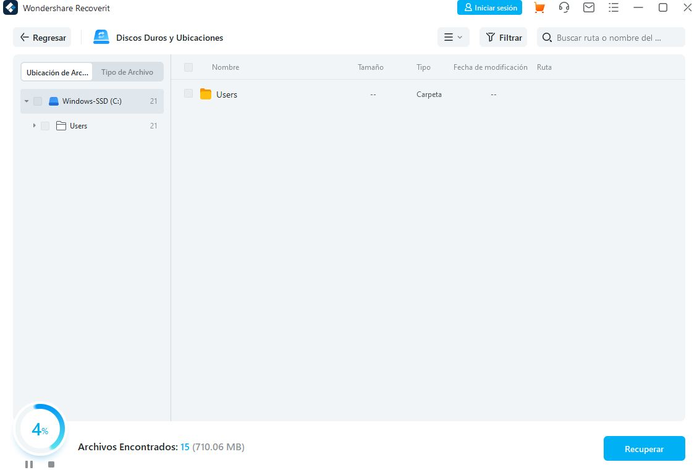
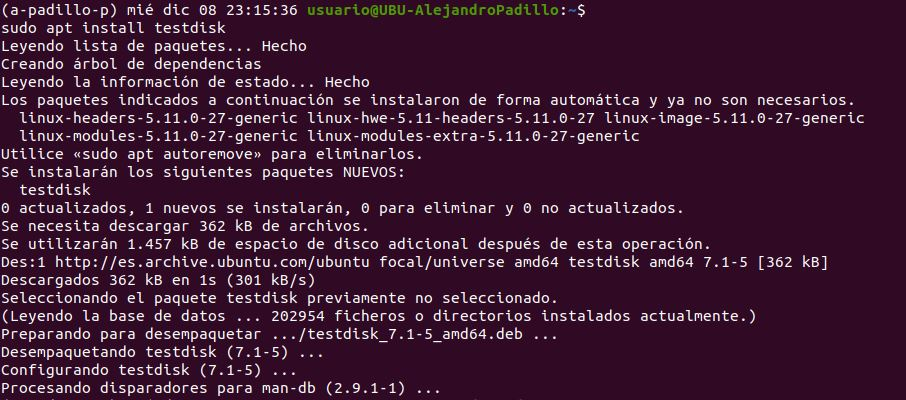
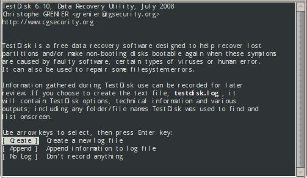

Los programas de Recuperación de datos son muy utiles aparte de eficazes y este es uno de ellos. Además es uno de los más fáciles de usar gracias a sus prestaciones.Para descargarlo solo con pinchar en la imagen se envía a la web oficial.
Cuando lo instalemos lo único que tenemos que hacer es darle a recuperar datos y el programa lo hará automaticamente , sin tener que hacer nada solo esperar a que acabe y una vez termine , ya tendremos todos los archivos que habiamos borrados , restaurados en nuestro ordenador.
Para poder instalar cualquier programa en Ubuntu como siempre hacemos un: sudo apt update, para tener todos los paquetes actualizados
Ahora instalamos TestDisk con un: sudo apt install TestDisk y se instalara el programa para usarlo mediante terminal
Apartir de aquí podemos recuperar los datos que queramos , siguiendo los pasos que nos dan por la terminal